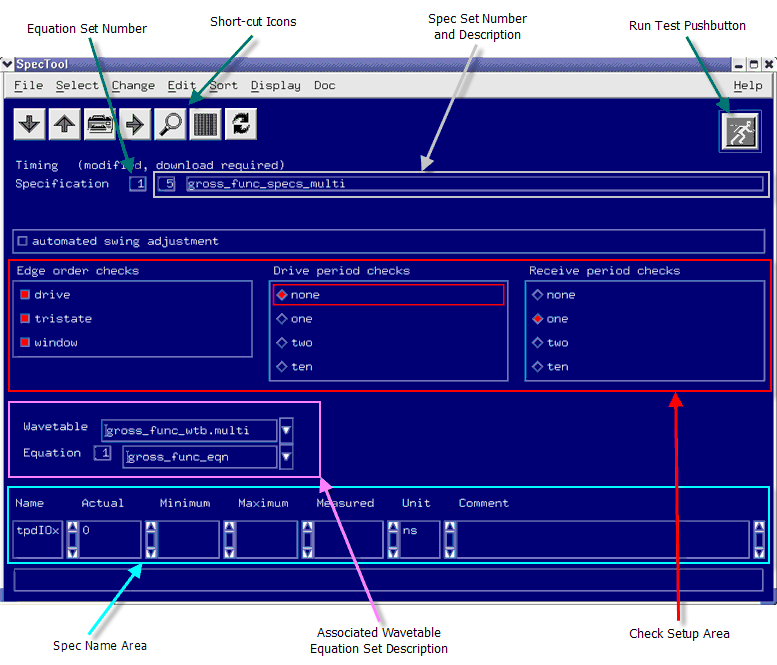
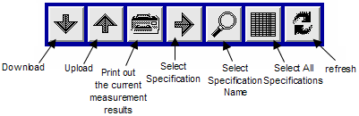

The Spec Tool window
The figure below shows a typical Spec Tool main screen, with the main areas pointed out.

The uppermost area of the screen shows the short-cut icons. The figure below shows the meaning of each of these.

The button is used to refresh the specification shown in the Spec Tool according to the current test suite. That means, after you execute a test suite, clicking refresh button, the corresponding specification of primary sets used in this test suite will be displayed in Spec Tool.
Below the short-cut icons are the current Specification and Equation Sets within the Timing Setup. The line below this shows the wavetable with which the spec set is associated.
In the middle of the screen (and provided Show Timing Info has been activated from within the Code pulldown menu - see later) is an area which lets you select which edge order checks you perform, and how many drive and receive periods should be in these checks. Detailed information on this is given in Changing the Check Options.
The lowermost table displays the variables in your spec set. Here you define their initial values together with their minimum and maximum sweep range values. If you perform an actual measurement (using the measure button), the measured values are also displayed.
The measure button provides for a quick measurement with the specified variable values.
More than one Spec Tool window can be started at the same time, allowing you to display both timing and level specifications (if necessary).
Functional changes
- Introduced before SmarTest 6.3.2